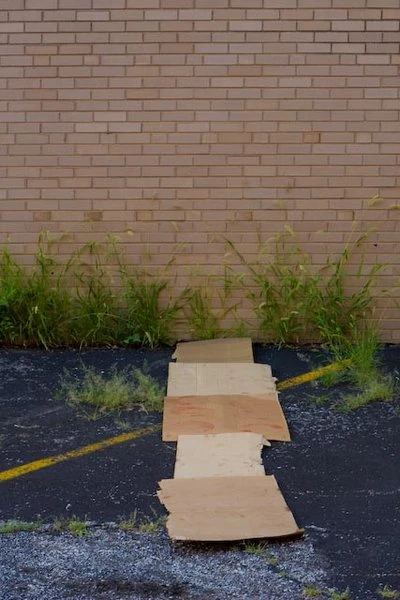
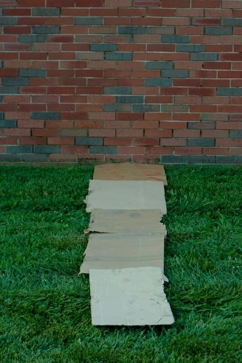

CF—PH—006 / Year to confirm
Desire Lines
Paths that end at a wall.
Two photographs of cardboard paths leading across pavement and grass to brick walls.




CF—PH—006 / Year to confirm
Paths that end at a wall.
Two photographs of cardboard paths leading across pavement and grass to brick walls.

